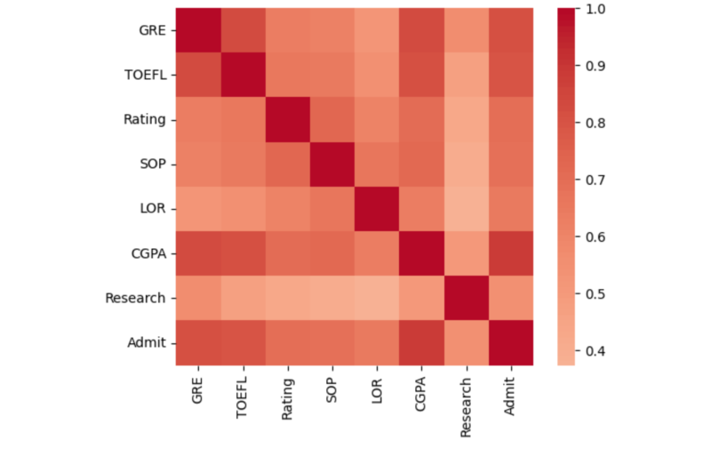
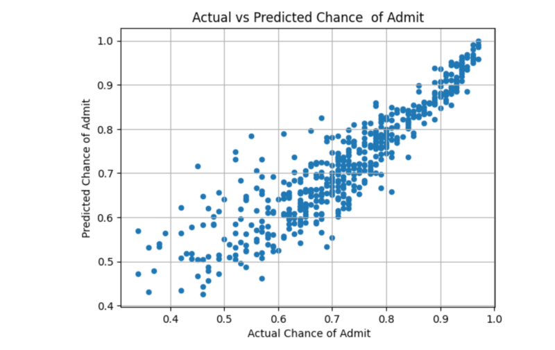

Automated Essay Grading


The goal of this project is to develop a predictive model that can estimate the chances of admission for graduate school applicants based on their application information. The model will be built using historical data from Hudson University's Graduate Admissions Department, which includes various attributes such as GRE scores, TOEFL scores, university ratings, statement of purpose strength, letters of recommendation, undergraduate GPA, and research experience.
Technology Stack Used:
- Python
- Libraries : Scikit-learn, TensorFlow, PyTorch, Pandas, NumPy
Part 1: Data Exploration and Preprocessing:
- Perform exploratory data analysis, including calculating descriptive statistics, visualizing variable distributions, and investigating relationships between variables.
- Preprocess the data as necessary, such as handling missing values, renaming columns, or encoding categorical variables.
Part 2: Predictive Modeling & Comparison:
- Build a linear regression model to predict the chance of admission based on the available application attributes.
- Implement an alternative regression model, such as Random Forest Regression.
- Evaluate the model's performance using metrics such as R-squared and Root Mean Squared Error (RMSE) on the test set.
Part 3: Interpretation and Recommendations::
- Interpret the results of the predictive model(s) and their implications for the admissions process.
- Discuss potential actions the admissions team could take based on the model predictions.
- Identify any concerns or limitations related to using the data and model for admission decisions.